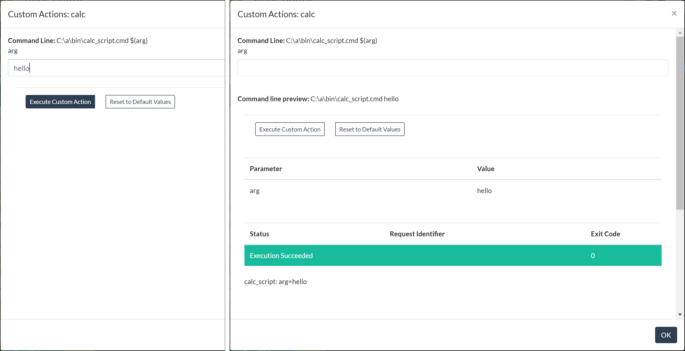
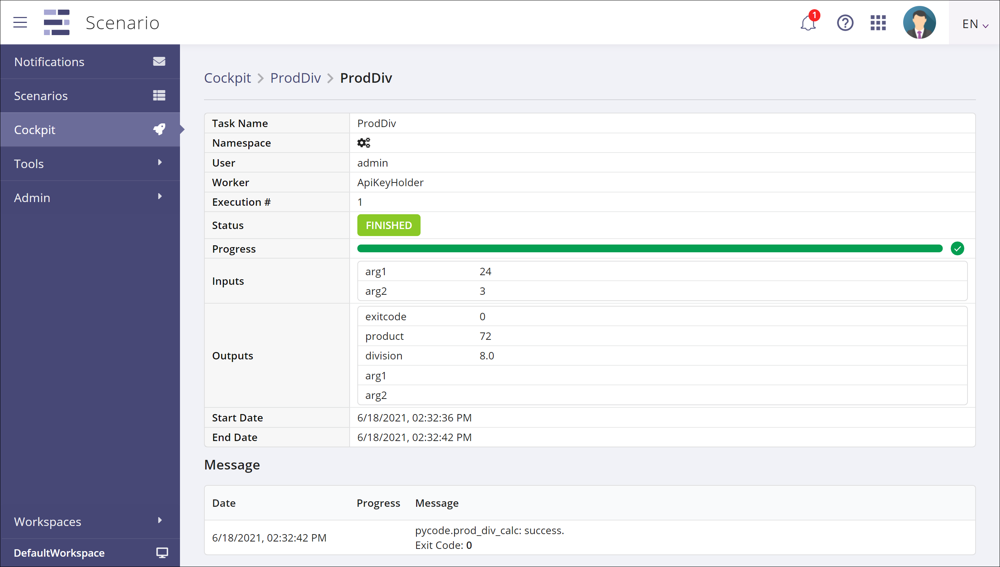

Contents
This document describes how to use AppControl to execute a script or program as a task in XC Scenario. It shows how to define the script invocation in an AppControl map, how to test it directly from AppControl, and finally how to use it from Scenario.
Benefits of using AppControl
There are many advantages to running scripts through AppControl, as opposed to running them directly from a worker task:
-
the use of an AppControl agent for execution makes it easy to run scripts on remote machines, without requiring the script author to manage remote connections and logins himself
-
executions through AppControl will benefit from monitoring and supervision by the production support team
-
defining script calls in an AppControl map allows for better tracking and management of the script code base
Pre-requisites
This document assumes that you have access to a working X4B installation, either Invivoo's SaaS platform, or an X4B platform deployed on your premises.
This includes XC Scenario, XC AppControl, and an AppControl worker (detailed below) deployed and configured to interact with this AppControl instance. Contact the administrator of your X4B platform to make sure that all the required components are available and properly configured.
AppControl Worker
The AppControl worker is a standalone program that acts as a worker program for Scenario:
- it publishes a catalog of tasks
- it polls the task queue for tasks to execute
- it runs tasks and posts task statuses
Unlike other worker programs that implement their own tasks, the AppControl worker:
- gets its list of tasks from custom actions in AppControl maps
- runs tasks by calling custom actions that get executed by an AppControl agent
The AppControl worker must be configured to communicate with an AppControl server through a gateway, which is defined inside AppControl, and is associated with a specific AppControl user.
Defining scripts for the AppControl worker
Scripts that are meant to be used with the AppControl worker need to be defined inside an AppControl map, as custom actions attached to some AppControl component.
Custom actions
A custom action is defined by an action element (inside a component
element) with a name="custom" attribute. Other important attributes are
commandname, which lets you identify each custom action, and value, which
holds the actual command to execute.
The contents of the value attribute are sent to the AppControl agent for
execution, so the platform where the agent is running determines the actual
shell script language to use, Windows command/batch script or linux/unix-like
shell script.
The action element can have parameters and outputParameters sub-elements,
for input and output parameters, respectively.
The action element also has a visibility attribute, which controls whether
the action is accessible from outside AppControl or not. The AppControl worker
only retrieves public tasks, so if a custiom action is to be used with Scenario,
it is mandatory to specify visibility="public".
See the AppControl map documentation for more details.
Example
The following XML snippet is an excerpt from an AppControl map that defines a
component named "comp" (you can find the map file here). This
component has a check action (mandatory) and two custom actions named calc
and prod_div.
<component name="comp" description="Script execution component" hostref="LOCAL" authref="LOCAL" redirectoutput="false" type="file">
<action value="echo 1" name="check" />
<action value="C:\a\bin\calc_script.cmd $(arg)" commandname="calc" name="custom" visibility="public">
<parameters>
<parameter name="arg" value="" canedit="true" validation="*" />
</parameters>
</action>
<action value="py c:\a\bin\pycalc.py $(operand1) $(operand2)" commandname="prod_div" name="custom" visibility="public">
<parameters>
<parameter name="operand1" canedit="true" validation="\d+" />
<parameter name="operand2" canedit="true" validation="\d+" />
</parameters>
<outputParameters>
<parameter name="product" />
<parameter name="division" />
</outputParameters>
</action>
</component>
The calc action has a single input parameter named arg, defined in the
parameters/parameter element, and referenced with the $(arg) inside the
value attribute. This action will run the Windows command line file found at
C:\a\bin\calc_script.cmd on the agent's machine, passing it the value of
the arg parameter (script file here).
The prod_div action has both input and output parameters. It runs a python
script with two input parameters, calculating the product and division of these
two operands, and returning those two values. The outputParameters element is
used to list the names of the return values, so they can be added to the task's
description in the Scenario task catalog, and also identified in the script's
output stream
(see A script with output parameters
below).
Running custom actions in AppControl
Once the custom actions have been defined in the map file, as above, the map must be imported into AppControl, using the New button in the UI. Please refer to the AppControl documentation if you need more information on how to use the AppControl UI.
When the Architecture tab is chosen to display the map's graph, the
components from the map are shown, and any custom actions defined on them will
be found on a dropdown menu accessible through a right-click:

A simple script
If we pick the calc action, a dialog box (on the left) shows the command line
that will be executed, as well as the arguments that are expected (in this
case, the single parameter arg). Enter a value for the argument, and press
the Execute Custom Action button. The dialog box (on the right) now
displays the status of the execution, which can be InProgess, while it's
running, and then Execution Succeeded as shown here when it's finished,
with the exit code from the script on the right-hand side.

As scripts usually produce output from their execution by printing to their
standard output stream, the AppControl custom action captures that output
stream and displays it on the screen, below the green status line. In this
case, it's the message calc_script: arg=hello that was printed by the script.
A script with output parameters
A shell script does not have a notion of output parameters. But in many situations, people write code that produces results, and we want to retrieve those results, either for displaying in the AppControl UI, or for communicating them to Scenario so they can be used by other tasks.
This second example, the prod_div action, illustrates this use case with a
python script that returns two output parameters, and it explains the
particular syntax that's used, in the script's standard output stream, to
represent return values so Scenario get use them.
The pycalc script (source code here) calls a python function
that calculates the product and division of its two operands. If we pick the
prod_div action in AppControl, the dialog box will shows us the command line
and input arguments (operand1, operand2), and after executing the action,
we'll also see the standard output, as before.

However, in this case, we see that the standard output has a very specific format:
<appcontrol>
{
'Message': 'pycalc: success.',
'OutputValues': {
'product': 72,
'division': 8.0,
}
}
</appcontrol>
Inside the <appcontrol> tags is an object with json/javascript syntax, that is meant to be interpreted by the AppControl worker:
-
the
Messageproperty holds some text that will be displayed in the Scenario UI, so it should be some kind of summary or resulting status from the script's execution. -
the
OutputValuesproperty is a dictionary of the output parameters. It must match the set of parameters listed in theoutputParameterselement of the AppControl map (see Custom action example above), and the values must be filled in by the script.
Running scripts/custom actions in Scenario
So far, we've seen how to define our scripts in the AppControl map, and how to run them from the AppControl UI. This section deals with using those scripts inside Scenario.
If everything has been set up correctly by your administrator, as described in Pre-requisites above, importing and loading (activating) the map that defines your scripts is enough to make them available in Scenario. The AppControl worker publishes all the custom actions from your map as Scenario tasks, in a namespace called AppControl.
Using the script as a Scenario task
In the Scenario designer, when creating or modifying a scenario definition,
drag and drop an automatic task object (the one with the gears icon, called
Task), and select the AppControl namespace in the Task Parameters
panel. In the list of tasks, you can see two tasks from the map,v1.xml
file, with names:
- map,v1@admin__comp_calc
- map,v1@admin__comp_prod_div
The structure of these names reflects the AppControl artifacts: <map>@<user>__<component>_<action>. These actions are now available, like any other task, to be used in your scenario.

Select the prod_div task, enter values for operands 1 and 2, and then run the
scenario. In the cockpit, you can see the output values and the message, just
as we saw in the AppControl UI above:
